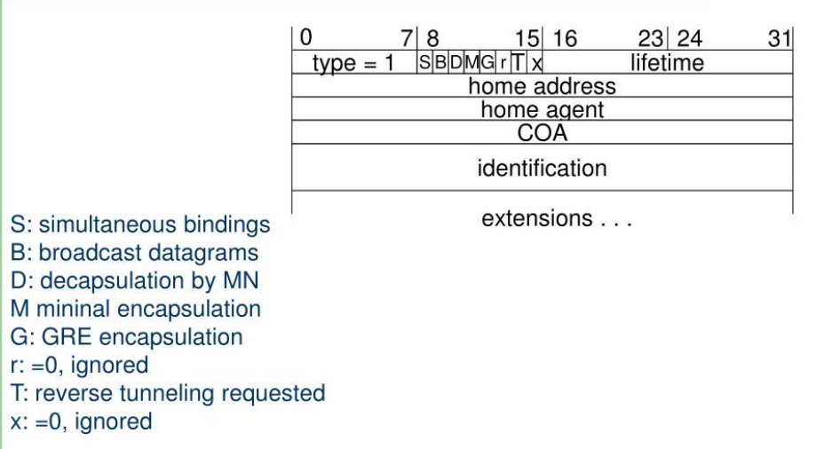
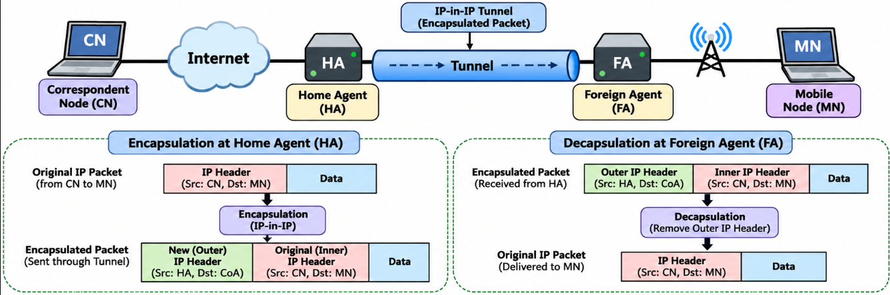
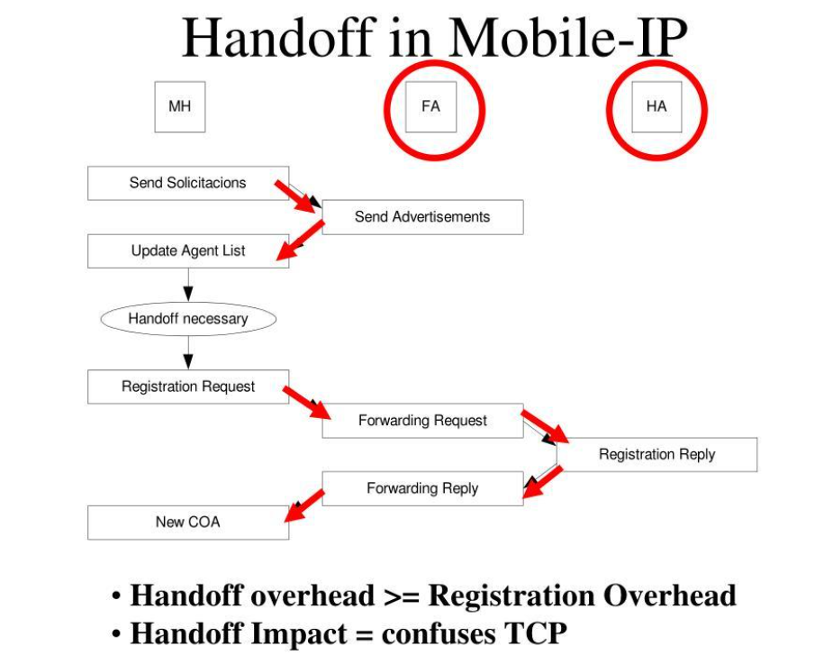

Concept 01 / 22
Comprehensive Fundamentals of Mobile IPv4 & Packet Tunneling
In conventional IP networks, an IP address serves two fundamental purposes simultaneously: host identification and topological location. Standard routing relies on network prefixes to direct datagrams to their destination subnet. Consequently, when a mobile host roams into a foreign network, its IP address must either change—breaking all active TCP sockets, ongoing downloads, and live voice/video streams—or incoming packets become topologically unreachable.
Mobile IPv4 (RFC 5944) resolves this challenge by separating identity from location. The roaming device maintains its permanent Home Address (HoA) for ongoing connections while acquiring a temporary Care-of Address (CoA) on visited subnets. Through automated mobility registration and IP-in-IP encapsulation tunneling (RFC 2003), packets are intercepted by a Home Agent and forwarded through the Internet to a Foreign Agent, guaranteeing seamless, transparent mobility.











Comprehensive 3-minute 33-second video lecture exploring Mobile IP encapsulation, packet tunneling, and mobility binding.
Key technical questions and concise explanations for exams and laboratory evaluations.
Mobile IPv4 (RFC 5944) is an Internet standard that allows a mobile device to maintain a continuous, permanent IP address (Home Address) even when moving between different physical IP subnets. Without Mobile IP, moving to a new network would require obtaining a new IP address, which breaks all active TCP connections, streaming sessions, and socket sockets.
The four primary entities are: (1) Mobile Node (MN): the mobile host that roams; (2) Home Agent (HA): a router on the MN's home link that intercepts and tunnels packets; (3) Foreign Agent (FA): a router on the visited foreign network that provides a Care-of Address and decapsulates incoming packets; (4) Correspondent Node (CN): any peer host communicating with the MN.
The Home Address (HoA) is permanent, assigned from the home network prefix, and serves as the MN's identity known to Correspondent Nodes. The Care-of Address (CoA) is temporary, reflecting the MN's current topological point of attachment in a foreign network, and serves as the tunnel endpoint for packet delivery.
Mobility agents periodically broadcast Agent Advertisements (ICMP Router Discovery messages with Mobile IP extensions) announcing their availability and Care-of Addresses. If an MN enters a network and receives no advertisement, it can broadcast an Agent Solicitation to prompt immediate advertisement transmission.
Under RFC 2003, the Home Agent encapsulates the original datagram by adding an outer 20-byte IP header. In the outer header, the Source IP is the HA address and the Destination IP is the Care-of Address (FA), with IP Protocol set to 4 (IP-in-IP). The entire original datagram is treated as the outer packet's payload.
The Foreign Agent receives the tunneled packet addressed to its CoA, strips off the outer 20-byte IP header, and restores the original datagram. It then inspects the inner header's destination (the MN's home address) and delivers the packet over the local link directly to the MN.
Triangle Routing occurs because inbound packets must always travel from CN → HA → FA → MN, even if the CN and MN are physically adjacent in the same city. This triangular path introduces unnecessary propagation delay. Route optimization techniques and IPv6 direct binding help mitigate this overhead.
Reverse Tunneling (RFC 3024) solves ingress filtering. Many network edge routers drop outbound packets whose Source IP does not match the local subnet prefix. If the MN sends packets directly to the CN using its Home Address as the source, edge routers discard them. Reverse tunneling encapsulates outbound packets from the FA back to the HA first.
The Home Agent uses Proxy ARP. When other routers or hosts on the home network broadcast an ARP request for the Mobile Node's IP address, the Home Agent responds with its own hardware MAC address. All subsequent link-layer frames are therefore directed to the Home Agent for tunneling.
When the MN detects it has returned home, it sends a deregistration request to the HA setting its Care-of Address equal to its Home Address. The HA deletes the mobility binding and stops proxy ARP. The MN broadcasts a Gratuitous ARP to notify all local switches and routers to associate its Home IP directly with its own MAC address.